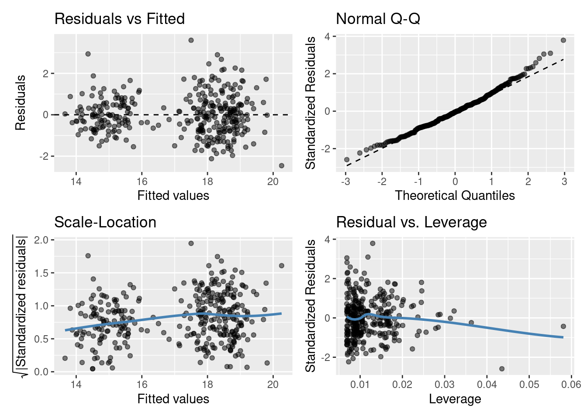

Model diagnostics for a linear model
Remember that it is always is imperative that we check the underlying assumptions of our model! If our assumptions are not met then basically the maths falls over and we can’t reliably draw inference from the model (e.g., can’t trust the parameter estimates etc.). Two of the most important assumption are:
equal variances (homogeneity of variance), and
normality of residuals.
Let’s look at the fit of the slm model (single continuous explanatory variable)
gglm::gglm(slm_sp) # Plot the four main diagnostic plots
Residuals vs Fitted plot
You are basically looking for no pattern or structure in your residuals (e.g., a “starry” night). You definitely don’t want to see is the scatter increasing around the zero line (dashed line) as the fitted values get bigger (e.g., think of a trumpet, a wedge of cheese, or even a slice of pizza) which would indicate unequal variances (heteroscedacity).
Normal quantile-quantile (QQ) plot
This plot shows the sorted residuals versus expected order statistics from a standard normal distribution. Samples should be close to a line; points moving away from 45 degree line at the tails suggest the data are from a skewed distribution.
Scale-Location plot (\(\sqrt{\text{|standardized residuals vs Fitted|}}\))
Another way to check the homoskedasticity (constant-variance) assumption. We want the line to be roughly horizontal. If this is the case then the average magnitude of the standardized residuals isn’t changing much as a function of the fitted values. We’d also like the spread around the line not to vary much with the fitted values; then the variability of magnitudes doesn’t vary much as a function of the fitted values.
Residuals vs Leverage plot (standardized residuals vs Leverage)
This can help detect outliers in a linear regression model. For linear regression model leverage measures how sensitive a fitted value is to a change in the true response. We’re looking at how the spread of standardized residuals changes as the leverage. This can also be used to detect heteroskedasticity and non-linearity: the spread of standardized residuals shouldn’t change as a function of leverage. In addition, points with high leverage may be influential: that is, deleting them would change the model a lot.
Do you think the residuals are Normally distributed (look at the QQ plot)? Think of what this model is, do you think it’s the best we can do?
Marginal predictions
If the residuals do not show a violation of our model assumptions (let’s just pretend the plots above don’t show anything for concern) we can produce margins plots, which show the marginal effect of a predictor, holding other variables constant.
The ggpredict() function from the ggeffects package can be used for this:
ggeffects::ggpredict(slm_sp, terms = "species")
## # Predicted values of bill_depth_mm
##
## species | Predicted | 95% CI
## ------------------------------------
## Adelie | 19.38 | 19.15, 19.62
## Chinstrap | 17.45 | 17.17, 17.73
## Gentoo | 14.28 | 14.07, 14.49
##
## Adjusted for:
## * bill_length_mm = 43.99We can even plot the marginal effects:
ggeffects::ggpredict(slm_sp, terms = "species") %>%
ggplot(aes(x = x, y = predicted, label = round(predicted, 3))) +
geom_point() +
geom_errorbar(aes(ymin = conf.low, ymax = conf.high), width = .5) +
geom_text(hjust = -.2) +
ylab( "Predicted bill depth (mm)") + xlab("") +
ggtitle("Fitted means for each species with 95% CIs", subtitle = "Adjusted for bill_length_mm = 43.99") +
theme_classic()
Model selection
Are the non-parallel lines non-parallel enough to reject the parallel line model?
Now we can compare nested linear models by hypothesis testing. Luckily the R function anova() automates this. Yes the same idea as we’ve previously learnt about ANOVA! We essentially perform an F-ratio test between the nested models!
By nested we mean that one model is a subset of the other (i.e., where some coefficients have been fixed at zero). For example,
\[Y_i = \beta_0 + \beta_1z_i + \epsilon_i\]
is a nested version of
\[Y_i = \beta_0 + \beta_1z_i + \beta_2x_i + \epsilon_i\] where \(\beta_2\) has been fixed to zero.
As an example consider testing the single explanatory variable model slm against the same model with species included as a variable slm_sp. To carry out the appropriate hypothesis test in R we can run
anova(slm,slm_sp)
## Analysis of Variance Table
##
## Model 1: bill_depth_mm ~ bill_length_mm
## Model 2: bill_depth_mm ~ bill_length_mm + species
## Res.Df RSS Df Sum of Sq F Pr(>F)
## 1 331 1220.16
## 2 329 299.62 2 920.55 505.41 < 2.2e-16 ***
## ---
## Signif. codes: 0 '***' 0.001 '**' 0.01 '*' 0.05 '.' 0.1 ' ' 1As you’ll see the anova() function takes the two model objects (slm and slm_sp) each as arguments. It returns an ANOVA testing whether the more complex model (slm_sp) is just as good at capturing the variation in the data as the simpler model (slm). The returned p-value should be interpreted as in any other hypothesis test. i.e., the probability of observing a statistic as least as extreme under our null hypothesis (here that each model is as good at capturing the variation in the data).
What would we conclude here? I’d say we have pretty strong evidence against the models being equally good! I’d definitely plump for slm_sp over slm, looking back at the plots above does this make sense?
Now what about slm_int vs slm_sp?
anova(slm_sp,slm_int)
## Analysis of Variance Table
##
## Model 1: bill_depth_mm ~ bill_length_mm + species
## Model 2: bill_depth_mm ~ bill_length_mm * species
## Res.Df RSS Df Sum of Sq F Pr(>F)
## 1 329 299.62
## 2 327 298.62 2 0.99284 0.5436 0.5812So it seems both models are just as good at capturing the variation in our data: we’re happy with the parallel lines!
Another way we might compare models is by using the Akaike information criterion (AIC) (you’ll see more of this later in the course). AIC is an estimator of out-of-sample prediction error and can be used as a metric to choose between competing models. Between nested models we’re looking for the smallest AIC (i.e., smallest out-of-sample prediction error). Typically, a difference of 4 or more is considered to indicate an improvement; this should not be taken as writ however, using multiple comparison techniques is advised.
R already has an AIC() function that can be used directly on your lm() model object(s). For example,
AIC(slm,slm_sp,slm_int)
## df AIC
## slm 3 1383.4462
## slm_sp 5 919.8347
## slm_int 7 922.7294This backs up what our ANOVA suggested model slm_sp as that preferred! As always it’s important to do a sanity check! Does this make sense? Have a look at the outputs from these models and see what you think.
Just because we’ve chosen a model (the best of a bad bunch perhaps) this doesn’t let us off the hook. We should check our assumptions
gglm::gglm(slm_sp) # Plot the four main diagnostic plotsResiduals vs Fitted plot: equal spread? Doesn’t look too trumpety!
Normal quantile-quantile (QQ) plot: skewed? Maybe slightly right skewed (deviation upwards from the right tail)
Scale-Location plot: equal spared? I’d say so.
Residuals vs Leverage: ? Maybe a couple of points with high leverage.